DROID-391
2005.06.23.
blog
droidzóna
levrov
Ma néhány fényképpel lesz gazdagabb a droidraktár. Svédországi utazásunk során megálltunk egy benzinkútnál Németországban. A bolt hasznos autófelszerelési tárgyakat is árusított, melyek közül többre magyarul is ráírták, mire való. Az ismeretlen fordító sajnos nem állt a helyzet magaslatán...
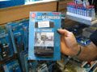
Na, ez itt micsoda? Áramátalakító, igen. No és hogy mondják ezt magyarul?
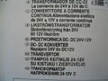
Így mondják. Ki hitte volna?
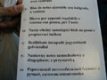
Lehet kapni például golvóstollat
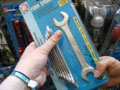
Na, kedves mûszaki mûveltségûek, mi ez? Villáskulcs? Nem...
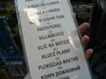
... hanem villáskvics. Bizony.
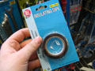
A szigetelõszalagot a legtöbb épelméjû ember felismeri. De ez különleges példány.
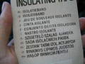
Ez ugyanis ajándék. Lehet venni pl. születésnapra.
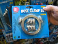
Hát ez meg mi? Csõbilincs-készlet. Hinnénk mi. De ez sem az, aminek látszik.
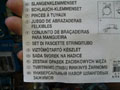
A vízbe tömi bele a zokszigént, tetszikérteni?
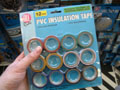
További szigetelõszalagok? Ajándékcsomag?
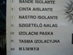
Nem, de majdnem.
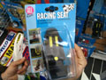
Na, és ez mi? Egy miniatûr versenyautó-ülés. Mire jó ez?
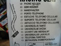
Ez, kérem, egy univerzális tantó! Mindenki látott az iskolában tantónénit, de az csak egy tantárgyat tanított. Ez univerzális.
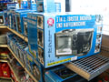
Ez a kis eszköz roppant praktikusnak tûnik. Kis grillsütõ, hozzá kávéfõzõ. Na, hogy mondják ezt magyarul?
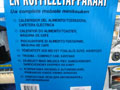
suto.zip
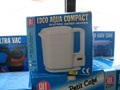
A vízmelegítõt is biztosan mindenki felismeri. No de mit tud ez a szerkezet?
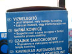
Fel van szerelve jelzõ lámpával, mely mutatja, ha esetleg. Hasznos, nem?
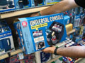
Feladat: írjuk le röviden, egy szóval, hogy mi ez
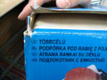
A gyártó megoldása
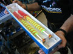
A legérdekesebb tárgyat a végére hagytuk. Két hegyes bökõ, színes spárgával, és az autótartozékok között árulják. Na, ez vajon mire szolgál? Én villámhárítóra tippeltem, sátorozáshoz, de nem az.
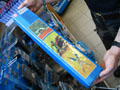
A doboz hátulja sem árul el sokat...
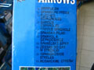
... míg el nem olvassuk a feliratot. Mi minden kellhet egy gépkocsiban!